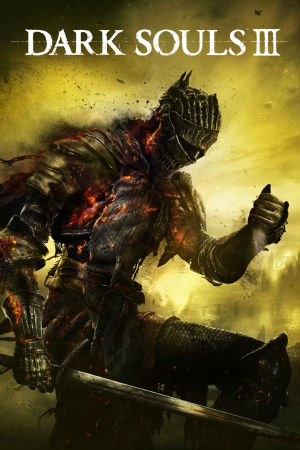

PlayStation 4, Xbox One, Windows
Originally released on March 24th, 2016 developed by FromSoftware under director Hidetaka Miyazaki, Dark Souls III launched for PlayStation 4, Xbox One, and PC. It was the final chapter in the Dark Souls trilogy. The gameplay follows the series' signature formula: punishing melee combat with stamina management, bonfires that act as checkpoints, a sprawling interconnected world laced with clever shortcuts, and online multiplayer where other players can invade your game or be summoned for cooperative play. Dark Souls III refined the formula with faster, more fluid combat inspired in part by Bloodborne, a wealth of playable character builds and weapon arts, and some of the most memorable boss encounters in the series, including the legendary sword-fight against Slave Knight Gael at the climax of its final DLC.
Set in the kingdom of Lothric, the game casts the player as an Unkindled Ash rising to link or usurp the fading First Flame, and its story deliberately draws together characters and themes from across the trilogy as the age of fire draws to a close. The game was a commercial and critical success, shipping over three million copies within its first month and earning numerous Game of the Year and RPG of the year accolades. Two expansions followed: Ashes of Ariandel in October 2016, which took players to a snowy painted world and added PvP-focused features, and The Ringed City in March 2017, a grand finale that provided what is widely regarded as the definitive end to the Dark Souls saga. Along with 2018's remaster of the original Dark Souls, Dark Souls III cemented FromSoftware's reputation and paved the way for the studio's later hits like Sekiro and Elden Ring.
FromSoftware
- Official developer website.
Dark Souls Wiki
- Contains lots of useful information about Dark Souls games.
Dark Souls Fextralife Wiki
- Another wiki that contains lots of useful information about Dark Souls games.
Dark Souls III Manual (JP, PS4)
- Online manual for the PS4 version in Japanese.
Dark Souls III Manual (JP, Xbox One)
- Online manual for the Xbox One version in Japanese.
Dark Souls III Manual (JP, Windows)
- Online manual for the Windows version in Japanese.
Steam Grid DB (DS3) - Contains lots of cool options for artwork that can be used in your Steam library.